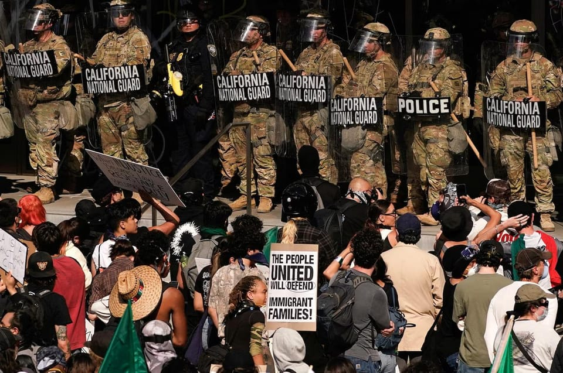

世界苦茶06月11日新闻 | 43条 | 洛杉矶部分地区宵禁

洛杉矶部分地区宵禁 | 中美据称达成很模糊共识 | ChatGPT发布o3 pro | 比亚迪承诺60天帐期 | 台湾前外长秘书卷入共谍案 | 中国将邀请大量网红访华
每天三件事：
苦茶数据
美元兑人民币：7.18（昨日7.18，前日7.18）
美元兑日元：145.17（昨日144.57，前日144.43）
上证指数：3407（昨日3384，前日3393）
标普500指数：6038（昨日6005，前日6000）
比特币：109553（昨日100402，前日105708）
布伦特原油：66.88（昨日67.49，前日66.41）
中国新闻
• 十五五规划征民企意见 ：中国国家发展改革委员会主任郑栅洁就编制“十五五”规划听取民营企业建议，并表示支持民营企业在推动科技创新、建设现代化产业体系等方面发挥更积极作用。据“国家发展改革委”微信公众号消息，郑栅洁星期二主持召开科技型民营企业座谈会，围绕科学编制“十五五”规划，聚焦科技创新领域听取意见建议。参会企业说，未来五至十年是相关领域科技集中突破的关键时期，中国具有集中力量办大事的制度优势、超大规模市场潜力和丰富多元的应用场景，将为企业加快技术创新和产品迭代提供舞台和机遇。
• 假冒北大教师账号被封 ：中国微博平台通报称，自称为北京大学数学教师韦东奕的账号是冒名注册，该账号已被关闭处理。微博社区观察员官方账号“围脖侠”星期二通报，经用户投诉和站方核实，微博账号“@韦东奕本人”确认是假冒仿冒账号，不仅侵犯个人权益，也扰乱网络传播秩序和公众认知，因违反社区公约有关规定，目前已受到关闭账号的处置。“围脖侠”强调，微博坚决抵制任何无底线博取流量的行为，同时提醒广大网民，在关注事件和个人健康的同时，切勿通过假冒账号、恶意曲解或编造阴谋论等手段借机博眼球蹭流量，否则将面临严厉处置。
• 中国邀网红来华交流 ：中国邀请美国网红今年7月参加为期10天的免费中华行，以加强民间交流、展示“真实的中国”。据彭博社星期二报道，《中国青年报》等官媒发布招募广告，显示免费中华行以中国和世界青年影响力交流为主旨，招募拥有至少30万粉丝的社交媒体年轻网红人士，与中国内容创作者合作。尽管中美关系近几个月来恶化，两国在地缘政治、科技和贸易等问题上争执不断，但这个项目标志着加强文化交流的努力。 （翻評：真正搞懂了大外宣的方法，我覺得全世界對中國的好感度會進入一個上升週期，但沒什麼用。）
• 中国双航母西太训练 ：中国官方通报，中国双航母编队到西太平洋进行例行训练，不针对特定国家和目标。据中国人民解放军新闻传播中心官方微信公众号“中国军号”星期二发布的消息，中国海军新闻发言人王学猛说，中国海军辽宁舰、山东舰航母编队日前赴西太平洋等海域开展训练，检验部队远海防卫和联合作战能力。王学猛指出，这是根据年度计划组织的例行性训练，旨在不断提高履行使命能力，符合相关国际法和国际实践，不针对特定国家和目标。
• 韩总统促中助半岛无核 ：韩国总统李在明在与中国国家主席习近平通话时说，呼吁中国为朝鲜半岛无核化发挥建设性作用。据韩联社报道，李在明星期二同习近平通电话，两人共同探讨双边关系发展方向。这是李在明就任韩国总统后，首次同中国领导人通话。习近平是继美国总统特朗普和日本首相石破茂之后，第三位与李在明通话的外国领导人。据报道，韩国总统室发言人姜由桢星期二在记者会上说，韩中领导人当天上午11时30分起，通话约30分钟。李在明呼吁中方为实现朝鲜半岛无核化、维护朝鲜半岛和平与稳定发挥建设性作用。习近平则说，实现朝鲜半岛和平与稳定符合中韩两国的共同利益，中方将为此继续作出努力。
• 中南共反霸权霸凌 ：中国国防部长董军会见到访的南非国防军司令马普赫万亚时表示，中国愿与南非共同反对霸权霸凌、分裂对抗。据中国国防部官网消息，董军星期二在北京会见赴华访问的马普赫万亚。董军说，近年来，在两国元首的战略引领下，两军各领域合作蓬勃发展。中方愿同南非一道践行真正的多边主义，共同反对霸权霸凌、强权政治、分裂对抗。
• 官媒批“零公里二手车” ：中国官媒发表评论文章，呼吁重拳治理“零公里”二手车，完善制度规范，引导行业加强自律，以共同营造良好市场秩序，促进汽车产业高质量发展。中共中央机关报《人民日报》星期二刊发题为《有力有效整治“零公里二手车”》的评论文章，提出上述看法。文章指出，“零公里二手车”乱象丛生，负面影响不可小视。对车企而言，这种销售模式在一定程度上有助于去库存，但也压缩了利润空间，甚至加剧了亏损，不利于提高产品质量、加大创新资源投入。这对企业可持续发展弊大于利。
亚太印太新闻
• 菲律宾副总统弹劾案退回 ：菲律宾参议员投票决定将针对副总统莎拉的弹劾案退回众议院，以澄清有关弹劾案是否符合宪法。路透社报道，菲律宾参议员们星期二进行一系列辩论，包括就杜特尔特阵营提出驳回这一弹劾案的动议后，投票决定将案件退回众议院。参议院星期二开始审理这起弹劾案不久，多数参议员便以18票对五票批准了一项动议，将弹劾案退回众议院，以确认弹劾案没有违反宪法，以及下一届国会“愿意且准备好”推进弹劾案。
• 国民党罢免行动再失败 ：台湾在野党国民党的反罢免行动再次受挫，针对民进党台南市立委林俊宪与王定宇的罢免连署均宣告失败。综合台湾《上报》和菱传媒报道，国民党立委、台南市党部主委谢龙介星期一宣布，由于罢免林俊宪和王定宇的二阶段连署人数未达法定门槛，将不提交连署文件，并销毁所有连署资料。依规定，二阶罢免需达约2万6000人连署，而此次仅收集到约1万5600份，距离门槛仍差逾一万份。
• 台总统府间谍案4人被诉 ：台北检方起诉四名民进党前党工，这四人被指涉嫌台湾总统府中国大陆间谍案。综合台湾《自由时报》《联合报》报道，总统府总统办公室前咨议吴尚雨、民进党前民主学院前副主任邱世元、新北市议员李余典前特助黄取荣和国安会秘书长吴钊燮担任外长时的助理何仁杰涉嫌总统府大陆间谍案，今年被陆续羁押禁见。台北地检署历经四个月侦办，星期二以违反国安法、涉向大陆泄漏“国家机密”等罪起诉上述四人，求五年至九年以上有期徒刑。
• 绿营陆谍据报泄露重要情报，助北京夺走台湾邦交国： 台湾绿营的大陆间谍案再有新消息。担任时任台湾外长吴钊燮秘书的何仁杰，据报将台湾与邦交国之间的重要分析情资外泄，让中国大陆掌握其中关键信息。这怀疑与吴钊燮任内台湾连断八个邦交国有重要关联。政治立场亲蓝的中时新闻网星期三上午报道，何仁杰长期担任吴钊燮在外长期间的机要秘书，主要工作就是汇整所有外交部各司呈上的外交文件，并转呈给吴钊燮核阅。因此，何仁杰对台美合作架构、台湾与邦交国之间的邦谊分析等重大外交决策相当熟悉。报道称，何仁杰搜集资料后，集中转给资深民进党党工黄取荣，而黄取荣用间谍应用程序传给大陆国安部门。因此，大陆早掌握台美合作关系重点及运作方式，也摸透台湾与邦交国之间所有的沟通及维系细节，并轻易找到台湾方面的运作关键。
• 李政宰片酬引片酬改革 ：韩国演员近年来片酬水涨船高，个个身价不斐，其中登顶的是靠着《鱿鱼游戏》一跃成为世界级影星的李政宰，他拍摄《鱿鱼2》的片酬达到单集10亿韩元。事实上，业界对于演员们的片酬等级颇有微词，不只对制作成本造成负担，也压缩了其他演员的片酬和工作人员待遇。在韩国投资巨额的Netflix，近期正式启动对演员酬劳的调整机制。根据韩媒报道，有业界人士指出，Netflix已为演员片酬设订了上限，最高每集不得超过4亿韩元，将对制作成本结构进行改革。自影视圈开启OTT时代以来，韩剧制作费用迅速攀升，过去韩剧平均每集成本仅约为3至4亿韩元，自从Netflix斥资巨额投入韩国市场后，单集成本飙升至平均20亿韩元以上。
科技新闻
• 任正非称华为晶片落后一代 ：中国科技巨企华为首席执行官任正非接受中国官媒专访时说，美国夸大了华为人工智能晶片的成绩，并称华为单晶片仍落后美国一代。中共中央机关报《人民日报》星期二刊发任正非的访问。针对昇腾晶片被“警告”使用风险，对华为带来的影响，任正非在华为深圳总部受访时说，中国做晶片的公司很多，许多都做得不错，华为是其中一家。
• OpenAI发布新AI模型o3-pro ：OpenAI已推出o3-pro，公司称这是其迄今能力最强的人工智能模型。O3-pro是OpenAI公司今年早些时候推出的推理模型o3的增强版本。与传统人工智能模型不同，推理模型通过逐步解决问题，使其在物理、数学和编程等领域表现更可靠。o3-pro将于周二起面向ChatGPT专业版和团队版用户开放，取代了o1-pro模型。OpenAI表示，企业版和教育版用户将在下周可以使用该模型。O3-pro也将于今天下午在OpenAI公司的开发者 API 中上线。o3-pro的API定价为每百万个输入token 20美元，每百万个输出token 80美元。
• 扎克伯格筹建AGI超级团队 ：马克·扎克伯格对Meta Platforms Inc.在人工智能领域的不足感到沮丧，正在组建一个专家团队以实现通用人工智能，从一个由人工智能研究人员和工程师组成的智囊团中招募人才，这些人员最近几周在他位于塔霍湖和帕洛阿尔托的家中与他会面。据知情人士透露，扎克伯格已优先为这个内部称为超级智能小组的秘密新团队招募人才。知情人士透露，扎克伯格心中有一个大胆的目标。在他看来，Meta能够也应该在实现所谓的AGI方面超越其他科技公司。扎克伯格计划为新团队招聘约50名员工，其中包括一名新的AI研究主管，几乎所有员工都是他亲自招募的。
• OpenAI与谷歌云合作 ：三位消息人士向路透表示，OpenAI计划采用Alphabet旗下谷歌云服务，以满足其日益增长的计算能力需求，这标志着人工智能领域两大知名竞争对手之间的一次出人意料的合作。
• 英伟达将建新超算 ：Nvidia和慧与表示，他们正与德国莱布尼茨超级计算中心合作，使用Nvidia的下一代芯片建造一台新的超级计算机。
财经新闻
• 中美达成贸易框架 ：中国商务部副部长李成钢星期二说，中美谈判团队经过两天的会谈，已经同意一个贸易框架，将各自汇报给领导人。据路透社报道，李成钢向记者说：“双方已原则上达成落实两国元首6月5日通话共识和日内瓦会晤共识的框架。”彭博社报道，美国商务部长卢特尼克也向记者说：“我们已经达成了实施日内瓦共识的框架。”
• 美中续谈伦敦经贸磋商 ：美国财政部长贝森特说，他与中国代表团为期两天的经贸会谈富有成效，双方官员正在伦敦继续谈判。美国和中国的谈判代表于当地时间星期一在英国伦敦启动经贸会谈，这是中美贸易战爆发以来，双方举行的第二轮正式磋商。法新社引述一名美国官员报道，由于贝森特要出席美国国会听证会，所以不得不在星期二晚间离开会场，返回华盛顿。但美国商务部长卢特尼克和贸易代表格里尔会根据需要，继续与中方代表团进行磋商。
• 美债或八月见底 ：美国国会预算办公室最新预测，若国债上限不提高，美国政府可能会在8月中旬至9月底之间耗尽资金，无法履行偿付责任。同3月份的预测比，CBO周一发布的预测把美国债务触及上限的期限推迟了至少两周，这可能为国会提供多一些时间争取达成协议，通过特朗普总统力推的税收与支出法案，提高联邦政府的借贷上限。联邦政府的债务上限其实在今年初已被触及，美国财政部在那之后就一直动用非常规措施，以防止联邦政府陷入债务违约。
• 中国煤气进口双降 ：随着中国国内煤炭和天然气产量创下新高，加之清洁能源大量接入电网、降低对火力发电的依赖，中国正逐步减少煤炭和天然气的进口。中国海关总署星期一公布数据显示，5月煤炭进口量同比减少17.7%，前五个月累计进口量则下降7.9%。同期天然气进口也出现下滑，5月同比下降11%，前五个月累计降幅为9.5%。彭博社指出，中国国内产量激增已将煤炭现货价格压至四年来低点，削弱了买家对成本更高进口燃料的兴趣。同时，欧洲因应对俄罗斯供应短缺，提高了对液化天然气的采购价格，一些中国企业倾向将资源转售海外，从中获利。
• 反倾销调查延半年 ：中国官方通报，将对欧盟进口猪肉产品发起的反倾销调查延长半年。中国商务部星期二在官网公告上述消息。根据公告，商务部依据《中华人民共和国反倾销条例》规定，在2024年6月17日决定对原产于欧盟的进口相关猪肉及猪副产品进行反倾销立案调查。
• 丰田在华销量四连增 ：日本三大汽车企业5月在华销量出炉，丰田新车销量连续四个月增长，本田和日产则持续下滑。据日本共同社报道，日本三大车商5月在华新车销量星期一全部出炉。数据显示，在纯电动汽车等产品的加持下，丰田汽车销量达14万4900辆，比上年同期增长6.8%，连续四个月同比增加。
• 日企促速批稀土出口 ：中国日本商会呼吁，中国商务部加快审批稀土的出口。据日本共同社报道，由在华日本企业企组成的中国日本商会星期一通报，已向中国商务部提出请求，加快审批被列入管制的稀土出口。通报指出，中方管制政策已对日企产品造成影响，希望寻求改善。
• 特朗普关税案上诉未决 ：关于是否在诉讼进行期间继续维持美国总统特朗普的大部分关税措施，一联邦上诉法院距离作出裁决更加接近了。美国国际贸易法院5月28日裁定特朗普大部分关税非法，但判决被联邦巡回上诉法院暂缓执行，美国司法部星期一则请求后者延长暂停期限。美国政府指出，贸易法院的判决损害了总统执行外交政策的能力。美国联邦巡回上诉法院5月29日发布一项简短命令，暂时搁置此前阻止特朗普政府征收全球关税的裁决。上诉法院这项命令暂停了国际贸易法院阻止关税并给政府10天时间解除关税的裁决。按联邦巡回法院制定的陈述时间表，陈述期到6月9日，随后将决定是否批准更长期的关税执行暂缓要求。
• 腾讯音乐收购喜马拉雅 ：中国在线音乐平台巨头--腾讯音乐官宣，公司拟以现金和股份发行方式全资收购中国在线音频平台--喜马拉雅控股，交易金额或接近30亿美元；分析师预计后续将释放更多协同效应。
• 特朗普准备废除拜登对发电厂污染的限制： 据知情人士透露，特朗普政府最早将于周三提议，废除拜登政府要求全国发电厂削减温室气体排放的气候规定。美国环境保护署还将推进一项计划，撤销针对发电厂排放汞和其他有毒空气污染物的限制措施。美国环境保护署还计划放宽当前严格的排放标准，这些标准要求燃煤电厂必须安装昂贵的污染控制设备，以限制汞、颗粒物和其他污染物的排放。这些措施在正式实施前，将进入公众意见征询阶段。此举正值特朗普政府推动美国国内能源开发，因为人工智能可能会带动电力需求激增。反对拜登政府限制措施的观点认为，原来的规定会导致燃煤电厂被迫关闭，并阻碍新燃气发电设施的建设。
• 比亚迪汽车将供应商支付账期统一至60天内： 今天凌晨，比亚迪汽车发文宣布：为落实国家及相关部委就保障产业链供应链稳定、促进汽车产业高质量发展作出的一系列部署要求，为助力中小企业健康发展，比亚迪汽车将供应商支付账期统一至60天内。比亚迪表示，其将以切实行动推动中国汽车产业高质量发展。未来，比亚迪汽车将继续通过技术创新与管理优化，携手上下游伙伴共同推动中国汽车产业行稳致远。周二晚间，中国一汽、东风汽车、广汽集团、赛力斯、吉利汽车、长安汽车等车企分别发表声明，就与供应商“支付账期不超过60天”作出承诺。
俄乌战争
• 俄愿交还乌军遗体 ：俄罗斯说，依旧准备归还战争中阵亡的乌克兰士兵，并正在就此事与基辅进行谈判。路透社报道，克里姆林宫星期二说，一些遗体仍在冷藏卡车中等待移交。俄罗斯此前曾说，这些卡车最初载有1000多具遗体，并从上星期六起，停放在交换地点附近让乌克兰接收，但指基辅尚未这么做。
• 欧盟拟第18轮制裁俄 ：欧盟委员会主席冯德莱恩星期二说，欧盟委员会已经提出针对俄罗斯入侵乌克兰的第18轮制裁方案，旨在打击俄罗斯的能源收入和军事工业。路透社报道，新一轮制裁方案提议禁止与俄罗斯北溪天然气管道，以及参与规避制裁的银行进行交易。委员会还建议下调对俄罗斯海运原油实施的价格上限，从每桶60美元，降至45美元。
• 俄夜袭乌克兰致3死13伤 ：乌克兰空军说，俄罗斯9日夜间至10日凌晨使用315架无人机和7枚导弹对乌克兰首都基辅和敖德萨发动袭击，造成至少3人死亡、13人受伤。基辅的住宅楼受损。敖德萨的一家妇产医院和住宅楼受损。俄罗斯则坚称其打击的是军事目标。
• 美国将削减对乌克兰的军事援助，赫格塞斯表示： 美国国防部长皮特·赫格塞斯在6月10日的国会听证会上表示，美国将在即将出台的国防预算中减少分配给乌克兰军事援助的资金。"这是预算中的削减，"赫格塞斯对美国众议院议员们说。"本届政府对这一冲突持非常不同的观点。我们认为通过谈判达成和平解决方案符合双方利益以及我国利益，特别是考虑到全球所有竞争性利益。"五角大楼尚未发布有关其2026年预算的完整文件。据赫格塞斯称，待定预算"为军事准备提供了历史性水平的资金，将（美国）作战人员及其需求放在首位。"赫格塞斯没有透露对乌克兰资金削减程度的具体细节。
其他新闻
• 美国洛杉矶市长巴斯6月10日宣布，将于10日20时至11日6时在市中心1平方英里的区域内实施宵禁，以阻止破坏和抢劫行为： 巴斯称，23家企业遭抢劫，损失达数百万美元，达到了一个“临界点”。除洛杉矶外，目前示威活动已蔓延至美国多个城市，包括旧金山、达拉斯、奥斯汀、芝加哥和纽约等。洛杉矶已有300余人被捕，其他地区亦有多人被捕。国民警卫队成员10日早些时候开始在移民与海关执法局官员执法时保护他们。移民局称，国民警卫队为联邦设施提供安全保障，并保护执法的联邦官员。对于加州政府要求联邦法院阻止联邦政府动用国民警卫队和海军陆战队的请求，联邦法院驳回了立即阻止的申请，但定于12日就临时限制令举行听证会。此外，特朗普对援引《反叛乱法》持开放态度，表示如果存在叛乱肯定会援引该法案。美国国防部表示，部署国民警卫队和海军陆战队的成本为1.34亿美元。《旧金山纪事报》 此前发布国民警卫队成员睡在地板上的照片，加州州长纽森转发照片并表达对保障条件的担忧。美军北方司令部回应称，照片中的士兵当前未执行任务，且由于安全局势不稳，前往更好的住所太危险。
• 五国制裁以部长涉暴力 ：英国、澳大利亚、加拿大、新西兰和挪威6月10日对以色列极右翼国家安全部部长伊塔马尔·本-格维尔和财政部长比撒列·斯莫特里赫实施制裁。他们被指在约旦河西岸煽动针对巴勒斯坦人的“极端主义暴力”，严重侵犯巴勒斯坦人权。以色列外交部表示已获悉制裁措施，外长吉德翁·萨尔称制裁“无法容忍”，已与总理内塔尼亚胡讨论该问题。斯莫特里赫称决心继续在约旦河西岸建设新的定居点。本-格维尔称：“我们战胜了法老，我们将战胜斯塔默之墙。”
• 以军扣援船驱逐船员 ：以色列海军拦截航向加沙地带的救援船玛德琳号之后， 扣押船上人员。以色列外交部星期二说，船上人员已送往特拉维夫机场，驱逐出境。救援船玛德琳号载着支援加沙地带的救援物资，由亲巴勒斯坦慈善团体组成的自由船队联盟运营。星期一凌晨，它试图突破以色列对这片沿海地区长达数年的海上封锁。船只接近加沙地带时，以色列军队登上了船只，并扣押了包括瑞典活动人士通贝里以及法国欧洲议会议员哈桑在内的12名船员。路透社引述以色列外交部的声明说，这艘悬挂英国国旗的游艇已拖往以色列阿什杜德港，船上人员连夜送往本·古里安机场。部分人员预计在数小时内离开。拒绝签署驱逐文件离开以色列者将按以色列法律通过司法机关授权，驱逐出境。
• 联合国指以犯战争罪 ：一个联合国独立委员会报告称，以色列对加沙、宗教和文化场所的袭击犯下了战争罪和危害人类罪，意图灭绝巴勒斯坦人。法新社报道，由联合国任命的巴勒斯坦被占领土问题独立国际调查委员会，星期二在一份报告中说：“以色列摧毁了加沙的教育系统，以及摧毁了加沙一半以上的宗教和文化场所。”报告指出：“虽然破坏教育设施在内的文化财产，本身并非种族灭绝行为，但这种行为的证据，仍可以推断出对受保护群体进行种族灭绝的意图。”
• 奥地利校园枪击10死 ：奥地利发生校园枪击案，造成10死多伤，全国将哀悼三天。综合外电报道，奥地利总理施托克尔星期二在记者会上说，全国哀悼的这三天，所有奥地利人都将悼念这些受害者。施托克尔在一份声明中说：“在格拉茨市一所学校发生的暴行是一场全国悲剧，深深地震撼了我们整个国家。我们所有人，整个奥地利现在感受到的悲痛难以言表。”
• 特朗普称洛市遭入侵 ：美国总统特朗普说，近日持续进行抗议活动的洛杉矶正遭受“外国敌人”入侵，他誓言“解放”这座城市。法新社报道，特朗普星期二在美国陆军位于北卡罗来纳州的军事基地布拉格堡发表讲话。他称加利福尼亚州洛杉矶的示威者为“动物”，指他们挥舞其他国家的旗帜。他还鼓动士兵嘘声嘲讽加州州长纽森和前总统拜登。美国海关和移民执法局上周在洛杉矶多个地点展开突击行动，拘捕数十名移民，引发多日示威。抗议者反对当局强硬执法，并与安全人员多次发生冲突。特朗普已下令向洛杉矶派遣2000名士兵，其中包括700名现役海军陆战队队员。
• 特朗普纽森互呛内战 ：美国总统特朗普与加利福尼亚州州长纽森互指对方要打“内战”，上千名示威者继续在洛杉矶市中心聚集。特朗普星期一在白宫对记者说，近日在洛杉矶参与抗议的人都是“职业煽动者”“叛乱分子”和“坏人”，应该坐牢，而纽森极不称职，工作干得很糟，应该抓起来才对。有记者提出纽森说总统有意挑起内战，特朗普对此指出，“正相反，我不希望发生内战，但大家任由像他那样的人行事，才会发生内战”。
• 特朗普被指滥用总统职权 ：美国总统特朗普上周与亿万富豪马斯克反目时，威胁要取消马斯克的公司与联邦政府的合同，这再度引发了他把总统权力当做个人工具的质疑。《纽约时报》分析指出，过去这样的言论可能会触发贪腐调查，但如今这已成为平常事。特朗普这番威胁表明，他早已摈弃那些限制总统滥用职权的规定和传统，把政府权力用于向朋友施以恩惠，或是惩罚得罪他的人，而且对此毫不掩饰。美国竞选法律中心主席波特说：“特朗普与已故的路易十四国王对世界有着共同的看法：朕即国家。是的，这是特朗普公开且不恰当地威胁要利用联邦政府巨大的订约权力作为武器，来惩罚批评者的一个例子。这完全是滥用权力。”
• 美国政府机构曾追踪拜访马斯克的外国人： 知情人士称，几家美国政府机构在2022年和2023年追踪了进出埃隆·马斯克房产的外国公民。国土安全部和司法部也参与了调查。调查的重点是那些拜访马斯克的人，这些人来自东欧和其他一些国家，并且可能试图对他施加影响。该调查并未进展到可以提出指控的阶段，目前的状况也无法确定。包括美国联邦调查局在内的多个机构的官员已听取了有关该调查的简报。这项调查是在现任特朗普政府上任之前进行，凸显了外界对于围绕在马斯克身边的众多外国公民的担忧。马斯克经营着五家公司，包括SpaceX，这些公司持有敏感的政府合同，并且他本人此前也拥有与政府高层官员接触的前所未有的机会。
• 马克龙表示，如果欧盟不采取行动，法国将禁止15岁以下儿童使用社交媒体： 法国总统埃马纽埃尔·马克龙周二表示，如果欧盟层面不采取行动，法国将在"几个月内"禁止15岁以下儿童使用社交媒体。马克龙在诺让一所中学入口处发生14岁学生刺伤学校工作人员事件后，对法国2台公共电视频道说："我们必须禁止15岁以下儿童使用社交媒体。""我给我们几个月时间来推动欧洲层面的行动。否则……我们将开始在法国实施。我们不能再等了，"他说。